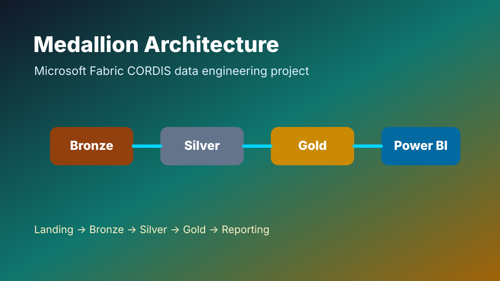
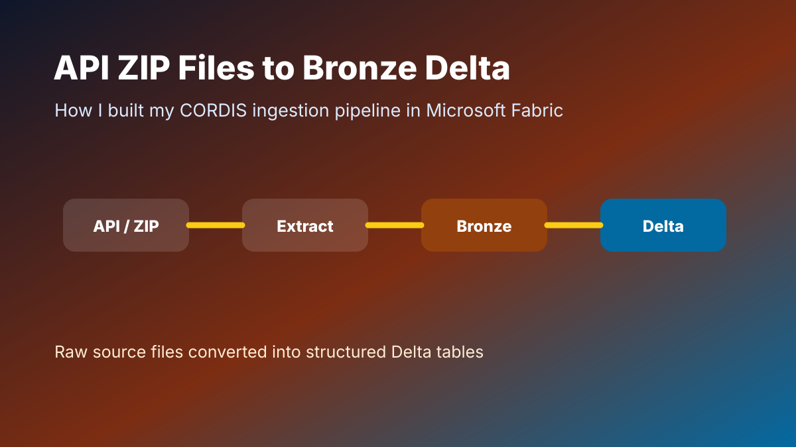
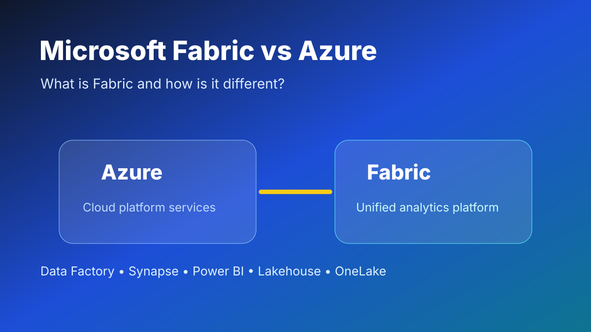
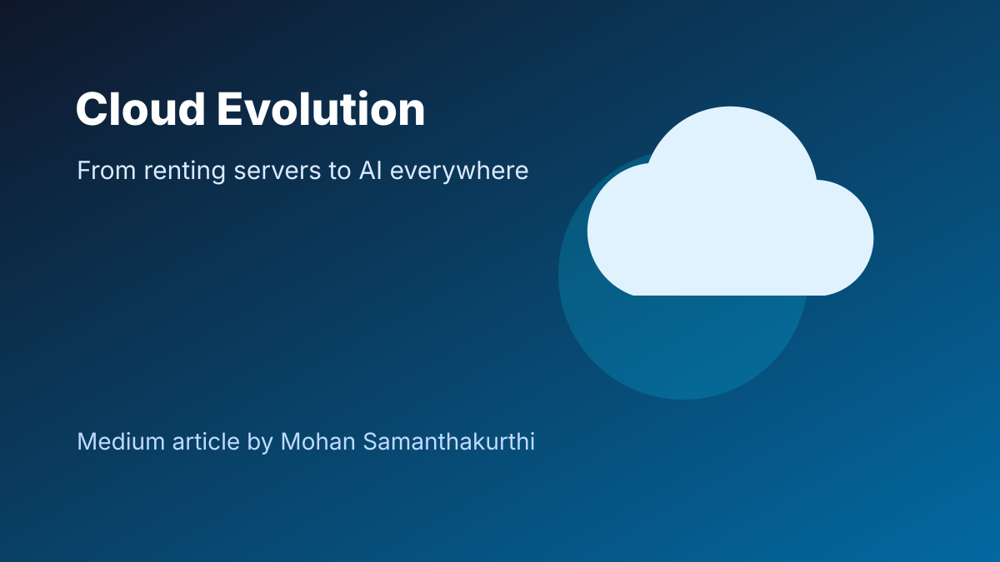
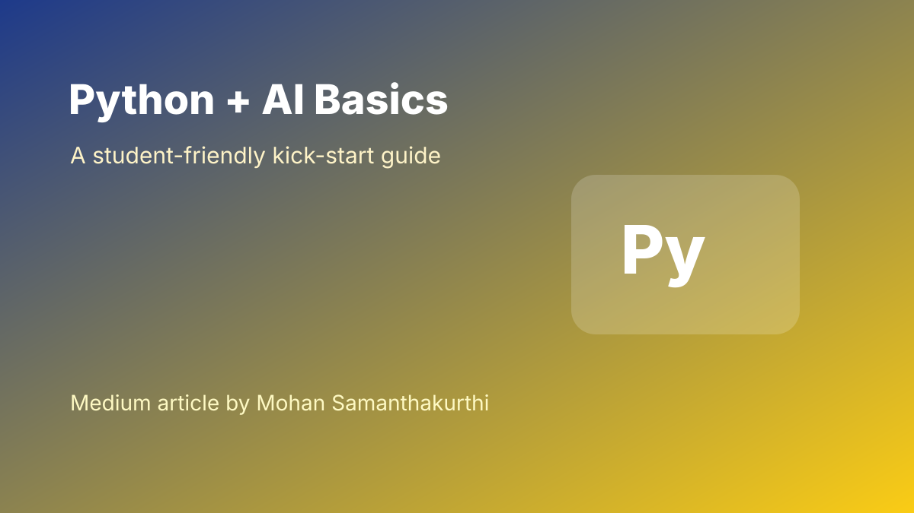

Technical Articles
Selected Medium articles covering Microsoft Fabric, Azure, Python, AI, GitHub and practical learning notes.

How I Implemented Medallion Architecture in Microsoft Fabric
My CORDIS data engineering project design using Landing, Bronze, Silver and Gold layers.

From API ZIP Files to Bronze Delta Tables
How I built CORDIS ingestion from source files into Bronze Delta tables in Fabric.

What is Microsoft Fabric and How is it Different from Azure?
A beginner-friendly explanation of Fabric and where it fits with Azure services.

Azure Cloud in 5 Minutes
A beginner-friendly map of core Azure services and how they connect.
From Renting Servers to AI Everywhere
How cloud evolved and why modern cloud feels different with AI everywhere.

Python Basics That Multiply With AI
A student-friendly guide to the Python basics that support AI learning.

You Still Need Skills
Where AI improves productivity and where human skill still matters.

Final Git Guide
Branching, merging and real-world workflow explained for beginners.
Your First Git Project
Three practical steps to set up, commit and push code to GitHub.
3 Easy Steps to Start with GitHub
A simple introduction to GitHub for version control and project sharing.